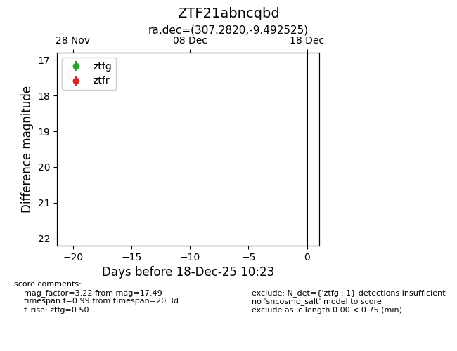
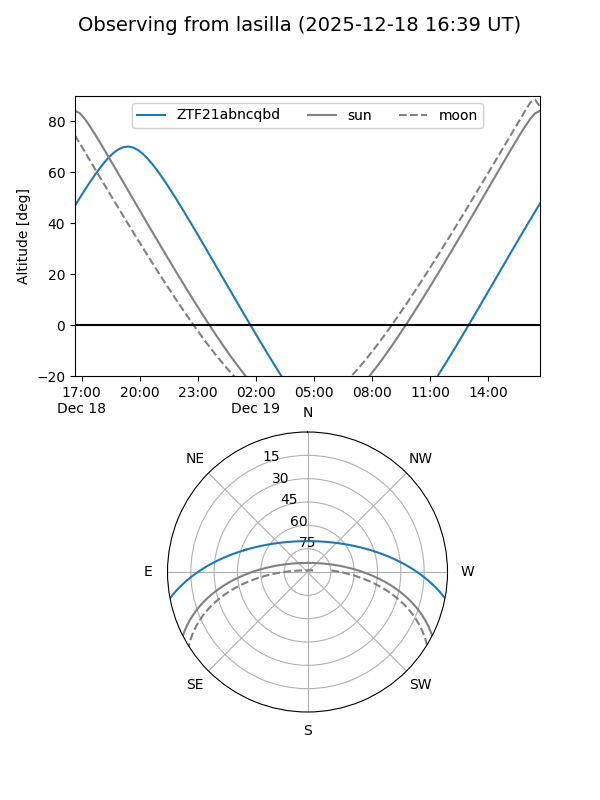
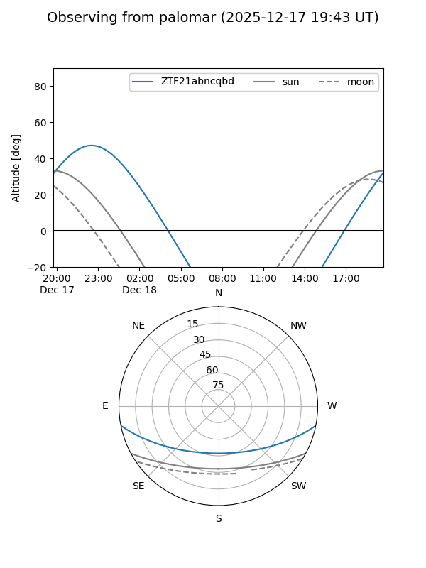

ZTF21abncqbd
Target ZTF21abncqbd at 2025-12-18 11:17
Aliases and brokers:
FINK: fink-portal.org/ZTF21abncqbd
Lasair: lasair-ztf.lsst.ac.uk/objects/ZTF21abncqbd
ALeRCE: alerce.online/object/ZTF21abncqbd
alt names
ZTF21abncqbd (ztf,fink_ztf)
Coordinates:
equatorial (ra, dec) = 307.2820,-9.49252
equatorial (HMS+DMS) = 20:29:07.68,-09:29:33.09
galactic (l, b) = (35.4297,-25.98517)
Photometry
last ztfg=17.49
1 ztfg detections
Lightcurve

Visibility


Additional plots